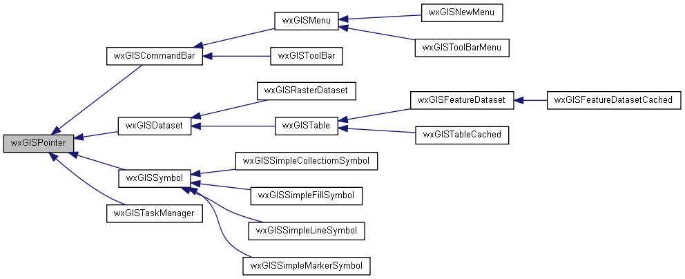

|
|
Version: 0.5.0 |


wxGISPointer Class Reference
A simple smart pointer class. More...
#include <core.h>
Inheritance diagram for wxGISPointer:

Public Member Functions | |
| virtual wxInt32 | Reference (void) |
| virtual wxInt32 | Dereference (void) |
| virtual wxInt32 | Release (void) |
Protected Attributes | |
| wxInt32 | m_RefCount |
Detailed Description
A simple smart pointer class.
The documentation for this class was generated from the following file:
- D:/work/projects/wxGIS/include/wxgis/core/core.h
- Generated on Mon Oct 28 2013 04:47:59 for wxGIS by
 1.8.5
1.8.5